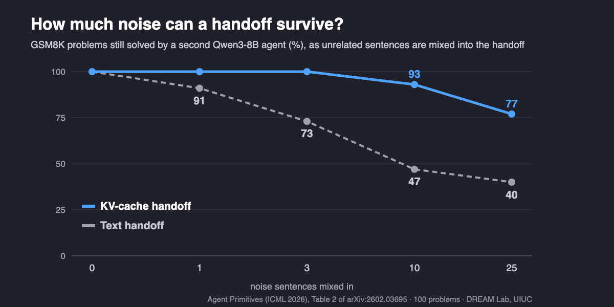
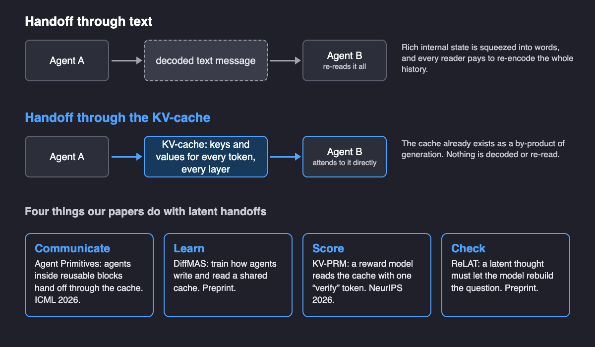
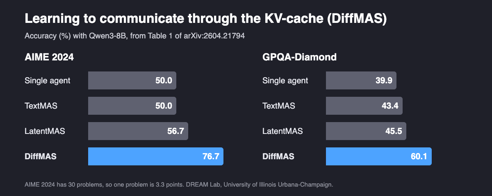

Can LLM Agents Share the KV-Cache Instead of Text Messages?
Agents built on the same model can hand each other their internal memory instead of writing messages. Four papers from our lab show what that memory can do in a multi-agent system: carry messages, be trained, be scored, and be checked.
By Haibo Jin, Ye Yu, Peng Kuang, Xiaopeng Yuan, Haohan Wang, and others · · About our ICML 2026 and NeurIPS 2026 papers and two preprints
Can LLM agents share the KV-cache instead of text? Yes, when they run on the same model: one agent can hand the next its KV-cache, the internal memory a transformer keeps while it writes, instead of a written message. Most multi-agent LLM systems still talk in text, so every agent re-reads the whole history and the sender's internal state is squeezed into words. Over the past year, four papers from the DREAM Lab at the University of Illinois Urbana-Champaign have each used the KV-cache for a different job in a multi-agent system. Agent Primitives (ICML 2026) uses it to communicate, and finds the handoff far more robust to noise than text. DiffMAS (preprint) trains the channel. KV-PRM (NeurIPS 2026) scores agents' reasoning from the cache, 37 times faster than re-reading the text. ReLAT (preprint) checks that a latent thought still matches the question. This post explains the KV-cache in plain words and walks through all four.
Key findings
- Communicate. In Agent Primitives (Jin et al., ICML 2026), handing a reasoning trace to a second Qwen3-8B agent through the KV-cache kept 93% of GSM8K problems solved after 10 unrelated sentences of noise were mixed in, against 47% when the trace was passed as text. Multi-agent systems built from KV-cache primitives averaged 75.3% across eight benchmarks with Qwen3-8B, against 66.1% for text-based agents and 58.8% for a single agent.
- Learn. In the preprint Learning to Communicate (Yu et al., 2026), training the shared KV-cache channel between agents (DiffMAS) raised Qwen3-8B from 50.0% to 76.7% on AIME 2024 and from 39.9% to 60.1% on GPQA-Diamond, after fine-tuning on only 210 math problems; text-based agents reached 50.0% and 43.4%.
- Score. KV-PRM (Kuang et al., NeurIPS 2026) scores multi-agent reasoning by reading the KV-cache the agents already produced, cutting scoring latency from 172.0 ms to 4.6 ms (37×) with Qwen3-8B on 4,096-token trajectories, while matching or beating a text-based process reward model on average (49.03% vs 47.42% under MCTS search).
- Check. In the preprint Closing the Loop on Latent Reasoning (Yuan et al., 2026), requiring a latent thought to reconstruct the original question at test time (ReLAT) raised Qwen3-8B on AIME 2024 from 56.7% with training-free latent agents (LatentMAS) to 73.3%.
What is the KV-cache, in plain words?
A large language model writes one token at a time. To choose each new token, every layer of the transformer looks back at all earlier tokens through attention, and for that it needs a "key" and a "value" vector for each of them. Recomputing these for the whole history at every step would be wasteful, so the model stores them as it goes. That store is the KV-cache: a key and a value for every token, at every layer. It is a running memory of everything the model has read and written, in the model's own internal language.
Two facts make the KV-cache interesting for multi-agent systems. First, it exists anyway: generation produces it whether or not anything else uses it. Second, it holds far more than the text it produced. The KV-PRM paper proves, under the linear representation hypothesis, that expressing a length-L cache losslessly in text would take on the order of d·L / log|V| tokens, where d is the model's hidden size and |V| its vocabulary size. Text is a lossy summary of the cache, not the other way round.
Key terms
- KV-cache (key-value cache)
- The key and value vectors a transformer stores for every token it has processed, at every layer, so it can generate the next token without recomputing the history.
- Multi-agent LLM system
- Several LLM "agents" with different roles, such as planner, solver and verifier, that pass work to each other to solve one problem.
- Latent communication
- Agents exchanging internal representations, such as hidden states or KV-caches, instead of decoded text.
- Agent primitive
- A reusable multi-agent building block, such as Review or Voting and Selection, whose internal agents talk through the KV-cache and which looks like a single agent from the outside.
- Process reward model (PRM)
- A model that scores intermediate reasoning steps, so a search procedure can keep promising partial solutions and drop poor ones.
- Test-time scaling
- Spending more compute at inference, for example by searching over many candidate solutions with beam search or Monte Carlo Tree Search (MCTS), to get better answers.
What goes wrong when agents pass text?
In a text-based multi-agent system, each agent decodes its thinking into words and the next agent reads those words from scratch. That has two costs. The first is reliability: as the shared history grows and collects irrelevant or wrong messages, text handoffs degrade. Agent Primitives measured this directly with Qwen3-8B. A correct GSM8K reasoning trace was handed to a second agent to finish, with sentences from unrelated problems mixed in:

In a second test, an extra instruction was planted in the middle of a long document (351 questions from InfiniteBench). Passed as text, the instruction was followed 15.6% of the time; passed through the KV-cache, 73.3%. The second cost is compute: every reader pays again to encode the growing history, and anything that reads whole trajectories many times, such as a reward model guiding search, pays it over and over.

How do agents communicate through the KV-cache?
Agent Primitives: Reusable Latent Building Blocks for Multi-Agent Systems (Haibo Jin, Peng Kuang, Ye Yu, Xiaopeng Yuan and Haohan Wang, ICML 2026) makes the handoff concrete. When agent A finishes, its KV-cache is concatenated, layer by layer, after the cached system prompt of agent B, and agent B starts writing from that combined cache. Positions must be shifted so the model's rotary position encoding (RoPE) still makes sense; without that re-indexing, accuracy collapsed on DeepSeek-R1-Distill-Llama-70B (for example from 85.3% to 31.1% on HumanEval+).
On top of this handoff the paper builds three reusable blocks drawn from common multi-agent designs: Review (a solver and a critic refine an answer in a loop), Voting and Selection (parallel solvers, one selector) and Planning and Execution (a planner and executors). An Organizer model picks and composes primitives for each query, guided by a small pool of configurations that worked before. Results with Qwen3-8B from Table 3 of the paper:
| Qwen3-8B, accuracy (%) | AIME 2024 | MATH | HumanEval+ | MedQA | GPQA-D. | Average of 8 |
|---|---|---|---|---|---|---|
| Single agent | 50.0 | 60.8 | 74.4 | 53.0 | 39.9 | 58.8 |
| TextMAS (text-based agents) | 53.3 | 61.4 | 80.5 | 75.0 | 43.4 | 66.1 |
| LatentMAS (training-free latent) | 56.7 | 62.6 | 80.5 | 75.3 | 45.5 | 67.8 |
| Primitives-based MAS | 76.7 | 63.7 | 82.3 | 76.7 | 59.6 | 75.3 |
The average covers eight benchmarks (AIME 2024 and 2025, MATH, GSM8K, HumanEval+, MBPP+, MedQA and GPQA-Diamond). Primitives-based systems raised the average over a single agent on all five models tested, including DeepSeek-R1-Distill-Llama-70B, where LatentMAS lowered it by 10.1 points. Against eight published multi-agent methods run with Llama-3-70B-Instruct, they reached 53.2% on GPQA, where the others scored 33.6–40.2%. They also used about 3–4× fewer tokens and less time than text-based agents, at 1.3–1.6× the cost of a single agent. More detail is in our Agent Primitives project post.
Can agents learn how to communicate through the KV-cache?
Agent Primitives and LatentMAS leave the channel itself fixed: the receiving agent gets whatever the sender happened to store. Learning to Communicate: Toward End-to-End Optimization of Multi-Agent Language Systems (Ye Yu, Heming Liu, Haibo Jin, Xiaopeng Yuan, Peng Kuang and Haohan Wang, arXiv preprint 2026) asks whether the channel can be learned. Its method, DiffMAS, has upstream agents build one shared, growing KV trace; the final agent decodes the answer from that trace; and supervised fine-tuning with LoRA adapters is applied over the whole multi-agent trajectory, with the backbone frozen. The paper argues that because the trace is concatenated rather than overwritten, the training signal reaching early agents does not shrink with their distance from the output.

| Qwen3-8B, accuracy (%) | Single | TextMAS | LatentMAS | DiffMAS |
|---|---|---|---|---|
| AIME 2024 | 50.0 | 50.0 | 56.7 | 76.7 |
| AIME 2025 | 46.7 | 53.3 | 53.3 | 56.7 |
| GPQA-Diamond | 39.9 | 43.4 | 45.5 | 60.1 |
| HumanEval+ | 74.5 | 80.7 | 80.7 | 81.5 |
| MBPP+ | 64.8 | 69.5 | 74.6 | 74.8 |
| OpenBookQA | 83.6 | 84.2 | 85.8 | 85.8 |
The training sets were deliberately tiny: 210 Hendrycks MATH problems for math and science, 50 HumanEval problems for code, 700 CommonsenseQA questions for commonsense. Across Qwen3-4B, 8B and 14B, Ministral-3-8B and DeepSeek-R1-Distill-Qwen-32B, DiffMAS was best or tied for best on every benchmark reported, though the gains were smaller at 32B (70.0% versus 66.7% for a single agent on AIME 2024, and no gain on AIME 2025). Is it the communication or just the fine-tuning? Text-based agents fine-tuned on the same data also reached 76.7% on AIME 2024, but DiffMAS was ahead on AIME 2025 (56.7% vs 50.0%), GPQA-Diamond (60.1% vs 53.5%) and OpenBookQA (85.8% vs 81.2%). Ten latent communication steps worked best (76.7%), while longer traces hurt (63.3% at 40 steps), and the trained channel decoded more steadily than the training-free one (mean perplexity 1.24 against 1.31 for LatentMAS on AIME 2024).
How does the KV-cache make checking agents' reasoning cheaper?
Multi-agent systems often get better answers by searching: generating many candidate reasoning paths and letting a process reward model keep the promising ones. That reward model is called at least once per candidate per agent step, and a text-based one re-reads the whole trajectory each time, at a cost that grows with the square of its length. KV-PRM: Efficient Process Reward Modeling via KV-Cache Transfer for Multi-Agent Test-Time Scaling (Peng Kuang, Haibo Jin, Xiaoyu Han, Yanli Wang, Xiaopeng Yuan, Ye Yu, Kaidi Xu and Haohan Wang, NeurIPS 2026) reads the cache instead. It appends a single "verify" token and runs it through the same base model with a small LoRA adapter that has learned to read the cache and output a score. Cost now grows linearly with length: about 5,000 times fewer operations for a typical 5,000-token trajectory.
The authors plugged KV-PRM and an otherwise identical text-based reward model into a team of four Qwen3 agents (Reader, Planner, Solver, Verifier). Results from Table 1 of the KV-PRM paper:
| Search | Scorer | MATH, Qwen3-8B (%) | AIME 2024, Qwen3-8B (%) | Average of 5 settings (%) | Scoring cost |
|---|---|---|---|---|---|
| Majority voting, n=40 | none | 60.55 | 33.33 | 44.88 | – |
| MCTS, n=50 | Text-PRM | 68.92 | 36.67 | 47.42 | 1× |
| KV-PRM | 69.57 | 40.00 | 49.03 | 1/4,367 (MATH, 8B) | |
| Beam search, W=1 | Text-PRM | 66.62 | 20.00 | 41.61 | 1× |
| KV-PRM | 67.02 | 30.00 | 42.89 | 1/2,782 (MATH, 8B) |
The average covers MATH with Qwen3-0.6B, 4B and 8B and AIME 2024 with Qwen3-4B and 8B. On an NVIDIA GH200 GPU, KV-PRM was 15 to 37 times faster per sequence; at 8B and 4,096 tokens one scoring call took 4.6 ms instead of 172.0 ms, and memory per sequence fell by up to 34.2×. It is not better everywhere: on GSM8K under MCTS it averaged 58.45% against 58.58% for the text-based model. Because its score is differentiable with respect to the cache, the authors also tried nudging the cache by gradient ascent at each agent handoff, with no search. This "KV Steering" proof of concept, which cites Agent Primitives' latent messages as its starting point, added 1.6 points on MATH with Qwen3-4B and 3.3 points on AIME 2024 and 2025 with Qwen3-8B.
How do you check a latent thought you cannot read?
Moving reasoning out of text has a cost: a text message that drops a constraint of the problem is visibly wrong, while a latent state that drops the same constraint looks like any other. Closing the Loop on Latent Reasoning via Test-Time Reconstruction (Xiaopeng Yuan, Haibo Jin, Ye Yu, Peng Kuang, Lijun Yu, Yushun Dong and Haohan Wang, arXiv preprint 2026) proposes a simple check: if a latent thought faithfully represents the question, the model should be able to rebuild the question from it. Strictly, this is latent reasoning inside one model rather than KV-cache sharing between agents: ReLAT's latent thought is a short sequence of 16 soft token embeddings. But it addresses the weakness every latent handoff shares, and it is compared directly against LatentMAS, which passes KV-cache states between agents.
ReLAT (Reconstruction-Guided Latent Reasoning At Test Time) runs a Question → Latent Thought → Question loop for each test problem, updates temporary LoRA weights for 16 steps to lower the reconstruction loss, answers the question, and then resets the weights. Results from Table 1 of the paper with Qwen3-8B:
| Qwen3-8B, accuracy (%) | AIME 2024 | AIME 2025 | MedQA | MBPP+ | GPQA-D. | Average |
|---|---|---|---|---|---|---|
| Single model | 50.0 | 46.7 | 53.0 | 64.8 | 39.9 | 50.9 |
| TextMAS | 53.3 | 53.3 | 75.0 | 69.5 | 43.4 | 58.9 |
| LatentMAS (open-loop latent) | 56.7 | 53.3 | 75.3 | 74.6 | 45.5 | 61.1 |
| ReLAT | 73.3 | 63.3 | 74.0 | 76.7 | 48.0 | 67.1 |
ReLAT had the best average on all four backbones tested (Qwen3-4B, 8B, 14B and DeepSeek-R1-Distill-Qwen-7B). It also beat two other test-time training objectives, COME and QTTT, and a compute-matched version that reconstructs the question without passing through the latent thought, which suggests the check works because it targets the latent state. On AIME 2025 it used about 10,280 tokens per question against about 64,381 for three rounds of text-based Self-Refine, an 84.0% reduction, while scoring 63.3% against 53.3%.
How do the four approaches fit together?
| Paper | What the KV-cache is used for | Training needed | Headline result (Qwen3-8B) | Status |
|---|---|---|---|---|
| Agent Primitives | Communicate: hand reasoning between agents inside reusable blocks | None (an Organizer LLM composes the blocks) | Average of 8 benchmarks 75.3% vs 66.1% for text-based agents | ICML 2026 |
| DiffMAS | Learn: train how agents write and read a shared cache | LoRA fine-tuning on a few hundred examples | AIME 2024 76.7% vs 50.0% for text-based agents | Preprint |
| KV-PRM | Score: a reward model reads the cache instead of the text | A LoRA reward adapter | Scoring 37× faster (172.0 ms to 4.6 ms) at matched accuracy | NeurIPS 2026 |
| ReLAT | Check: a latent thought must rebuild the question | Temporary LoRA updates per question | AIME 2024 73.3% vs 56.7% for LatentMAS | Preprint |
Read together, the four papers suggest a progression. Passing the cache instead of text already makes handoffs more robust and cheaper (Agent Primitives). Once the channel is continuous it becomes something you can optimize (DiffMAS) and score cheaply, even by gradient (KV-PRM). And because nobody can read it, it needs a check of its own (ReLAT). The approaches are complementary rather than competing: a system could compose primitives, train their channel, score candidates from the cache and check latent states before answering, although no paper has yet combined them.
What else do we know about KV-cache communication between agents?
- Training-free latent collaboration. Latent Collaboration in Multi-Agent Systems (Jiaru Zou, Ruizhong Qiu, …, James Zou, Mengdi Wang and Ling Yang, ICML 2026 Spotlight) introduced LatentMAS, in which agents think in last-layer hidden states and share a latent working memory, with no training. Across nine benchmarks it reported up to 14.6% higher accuracy than single agents and text-based systems, 70.8–83.7% fewer output tokens and 4–4.3× faster inference. LatentMAS is a baseline in three of our four papers; our results suggest that composing (Agent Primitives), training (DiffMAS) or checking (ReLAT) the latent channel adds accuracy and stability on top of the training-free approach, at some extra cost.
- Communication between different models. Cache-to-Cache: Direct Semantic Communication Between Large Language Models (Tianyu Fu, Zihan Min, Hanling Zhang, Jichao Yan, Guohao Dai, Wanli Ouyang and Yu Wang, ICLR 2026) learns a network that projects and fuses one model's KV-cache into another's, so even different model families can communicate. It reported 6.4–14.2% higher average accuracy than individual models, about 3.1–5.4% over text communication, and a 2.5× average latency speedup. All four of our papers assume agents share a model; C2C tackles the harder heterogeneous case. In the DiffMAS paper's reasoning benchmarks C2C scored lower, which the authors attribute to its training data (OpenHermes-2.5, mainly instruction following) not matching long reasoning tasks.
- Reusing caches for speed. KVCOMM: Online Cross-context KV-cache Communication for Efficient LLM-based Multi-agent Systems (Hancheng Ye, Zhengqi Gao, …, Danyang Zhuo and Yiran Chen, NeurIPS 2025) attacks the cost from the systems side: agents re-process overlapping context, and caches cannot simply be reused because each agent's prefix differs. KVCOMM corrects the cache offsets with a pool of anchor examples, without training, and reported over 70% cache reuse and up to 7.8× faster prefill in a five-agent setting (time to first token from about 430 ms to about 55 ms). The position problem it solves is related to the RoPE re-indexing that Agent Primitives needs.
- Process reward models for agents. Let's Verify Step by Step (Hunter Lightman, Vineet Kosaraju, …, Karl Cobbe, OpenAI, 2023) showed that rewarding each reasoning step beats rewarding only the final answer on MATH, and released 800,000 step-level labels (PRM800K). MASPRM: Multi-Agent System Process Reward Model (Milad Yazdani, Mahdi Mostajabdaveh, Zirui Zhou and Ying Xiong, 2025) brought step-level reward models to multi-agent systems, trained from MCTS rollouts without human step labels. Both score text; KV-PRM keeps their training recipe and changes what the scorer reads.
- The privacy question. LCGuard: Latent Communication Guard for Safe KV Sharing in Multi-Agent Systems (Sadia Asif, Mohammad Mohammadi Amiri, Momin Abbas, Prasanna Sattigeri and Karthikeyan Natesan Ramamurthy, 2026) points out that a shared cache also carries an agent's inputs and intermediate reasoning, and that an adversarial decoder may reconstruct sensitive content from it. It learns transformations of the cache that reduce this leakage while keeping task performance. The richer information that makes the cache useful is the same information that makes it worth guarding.
What this does not show
- Same model, same family. All four methods assume the agents share one model (KV-PRM also needs the reward model to share its architecture), and positions must be re-indexed correctly. Mixing model families needs a translation layer such as Cache-to-Cache, and closed API models do not expose their caches at all.
- Benchmarks, not deployments. The evidence comes from math, science, code, medical and commonsense benchmarks with open models up to 70B parameters. Agent Primitives' Organizer is itself a large model (GPT-5.2 by default).
- Small benchmarks, large swings. AIME 2024 and AIME 2025 have 30 problems each, so one problem moves accuracy by 3.3 points. Several headline gains here (for example +26.7 points for DiffMAS and +16.6 for ReLAT on AIME 2024) amount to 8 and 5 problems.
- Tuning and review status. ReLAT's learning rate and thought length, and DiffMAS's number of communication steps, are ablated on the same AIME benchmarks they report. DiffMAS and ReLAT are preprints that have not yet been peer reviewed.
- Opaque by design. Latent messages cannot be read by a person. ReLAT's reconstruction check is a necessary condition for a faithful latent thought, not proof of correct reasoning, and a shared cache raises privacy questions that text logs do not. KV Steering is a preliminary proof of concept.
Frequently asked questions
Can LLM agents share the KV-cache instead of text?
Yes, when the agents run on the same model. The receiving agent attends to the sender's cached keys and values directly instead of reading a decoded message. Four DREAM Lab papers use this to communicate inside reusable agent blocks (Agent Primitives, ICML 2026), to train the channel (DiffMAS, preprint), to score reasoning (KV-PRM, NeurIPS 2026) and to check latent thoughts (ReLAT, preprint).
What is the KV-cache in an LLM?
The KV-cache is the set of key and value vectors a transformer stores for every token it has already processed, at every layer. It lets the model generate the next token without recomputing the whole history, and it exists as a by-product of generation whether or not anything else uses it.
How does KV-cache sharing speed up multi-agent LLM systems?
It removes repeated decoding and re-reading of the same history. Agent Primitives used about 3 to 4 times fewer tokens and less time than text-based agents, at 1.3 to 1.6 times the cost of a single agent. KV-PRM scores a trajectory by reading the existing cache with one extra token, cutting scoring latency from 172.0 ms to 4.6 ms with Qwen3-8B on 4,096 tokens.
Is latent communication between agents less reliable than text?
Not necessarily, but it needs care. In Agent Primitives, a KV-cache handoff kept 93% of GSM8K problems solved under heavy noise versus 47% for text. Training-free latent channels can be unstable on some models, which DiffMAS addresses by training the channel and ReLAT by checking that a latent thought can rebuild the question. Neither is a guarantee of correct reasoning.
Citation
@inproceedings{jin2026agentprimitives,
title = {Agent Primitives: Reusable Latent Building Blocks for Multi-Agent Systems},
author = {Jin, Haibo and Kuang, Peng and Yu, Ye and Yuan, Xiaopeng and Wang, Haohan},
booktitle = {International Conference on Machine Learning (ICML)},
year = {2026}
}
@article{yu2026learning,
title = {Learning to Communicate: Toward End-to-End Optimization of Multi-Agent Language Systems},
author = {Yu, Ye and Liu, Heming and Jin, Haibo and Yuan, Xiaopeng and Kuang, Peng and Wang, Haohan},
journal = {arXiv preprint arXiv:2604.21794},
year = {2026}
}
@inproceedings{kuang2026kvprm,
title = {KV-PRM: Efficient Process Reward Modeling via KV-Cache Transfer for Multi-Agent Test-Time Scaling},
author = {Kuang, Peng and Jin, Haibo and Han, Xiaoyu and Wang, Yanli and Yuan, Xiaopeng and Yu, Ye and Xu, Kaidi and Wang, Haohan},
booktitle = {Advances in Neural Information Processing Systems (NeurIPS)},
year = {2026}
}
@article{yuan2026closing,
title = {Closing the Loop on Latent Reasoning via Test-Time Reconstruction},
author = {Yuan, Xiaopeng and Jin, Haibo and Yu, Ye and Kuang, Peng and Yu, Lijun and Dong, Yushun and Wang, Haohan},
journal = {arXiv preprint arXiv:2606.06252},
year = {2026}
}Related from our lab
- Agent Primitives: reusable latent building blocks for LLM multi-agent systems that talk through the KV-cache
- Can AI agents analyze gene expression data like experts? A six-agent system in practice
- Does recursive self-improvement make AI agents forget what they mastered?
- When more reasoning is actually less: why longer chain-of-thought can hurt LLM accuracy
- DREAM Lab publications, including Agent Primitives (ICML 2026) and KV-PRM (NeurIPS 2026)
- DREAM Lab preprints, including Learning to Communicate and Closing the Loop on Latent Reasoning
Papers: Haibo Jin, Peng Kuang, Ye Yu, Xiaopeng Yuan, Haohan Wang. “Agent Primitives: Reusable Latent Building Blocks for Multi-Agent Systems.” ICML 2026. · Ye Yu, Heming Liu, Haibo Jin, Xiaopeng Yuan, Peng Kuang, Haohan Wang. “Learning to Communicate: Toward End-to-End Optimization of Multi-Agent Language Systems.” arXiv 2026. · Peng Kuang, Haibo Jin, Xiaoyu Han, Yanli Wang, Xiaopeng Yuan, Ye Yu, Kaidi Xu, Haohan Wang. “KV-PRM: Efficient Process Reward Modeling via KV-Cache Transfer for Multi-Agent Test-Time Scaling.” NeurIPS 2026. · Xiaopeng Yuan, Haibo Jin, Ye Yu, Peng Kuang, Lijun Yu, Yushun Dong, Haohan Wang. “Closing the Loop on Latent Reasoning via Test-Time Reconstruction.” arXiv 2026. University of Illinois Urbana-Champaign.